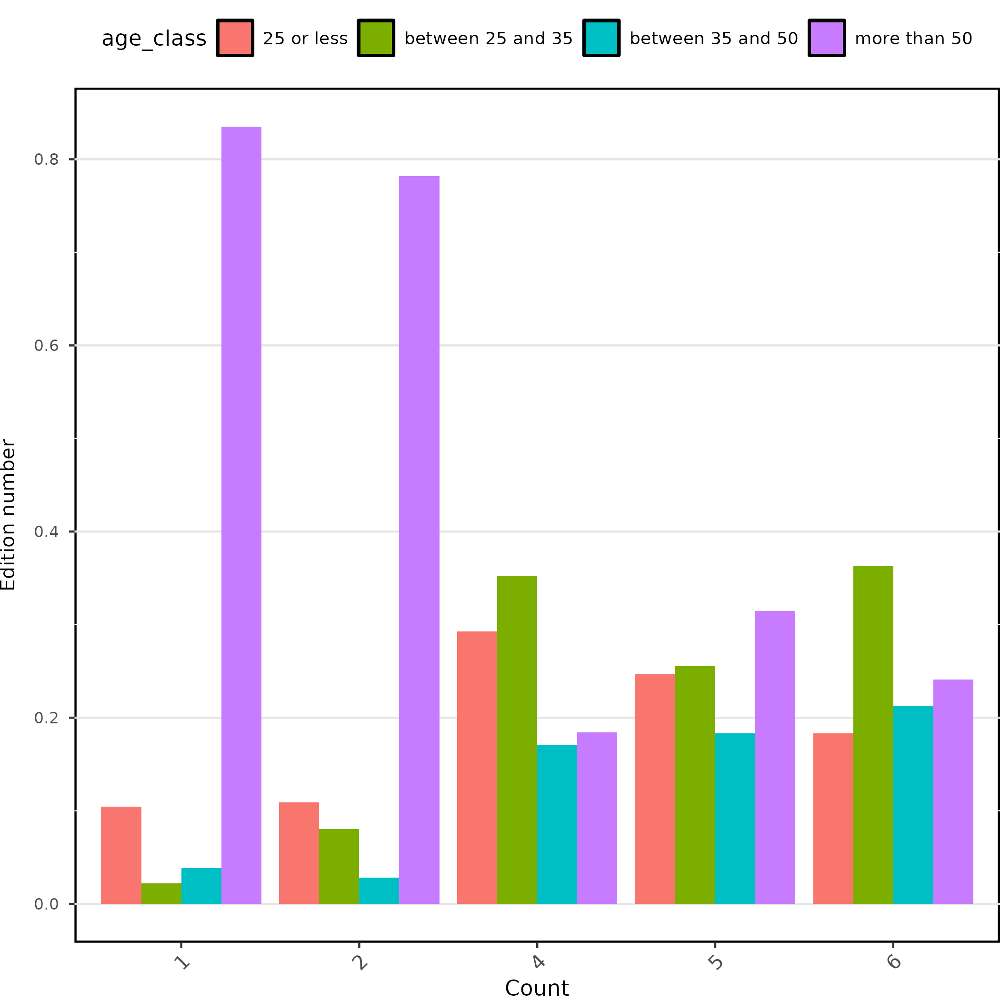

Au Pré du Son
Goal
This project aim at assessing the typical profile of the public attending the festival Au pré du son. The ultimate goal is to improve the festival communication and attract more young local people.
Analyses
Age of the participants
We visualize how the age of the participants changed between editions using the package ggplot2 [1]. To do so, we estimated the mean and the standard deviation per edition. Note that the persian mathematician and astronomer Al Biruni was one of the first to use a concept close to the arithmetic mean to correct astronomical observations [2], and he was really proud of this (Figure 1).

We plot the mean ± standard-deviation of participants age according to the edition (Figure 2, Figure 3).

Origin of the participants
We visualize how the origin of the participants changed between editions (?@fig-regions).
Our analyses:
References
1.
Wickham H. 2016 ggplot2. Cham: Springer International Publishing. (doi:10.1007/978-3-319-24277-4)
2.
2024 Al-Biruni.